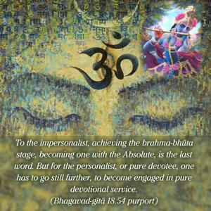
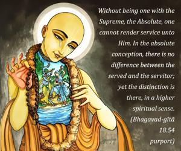
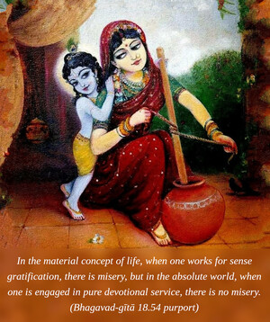
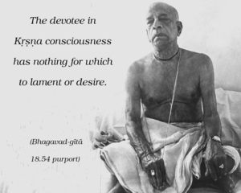

One who is thus transcendentally situated at once realizes the Supreme Brahman and becomes fully joyful. He never laments or desires to have anything. He is equally disposed toward every living entity. In that state he attains pure devotional service unto Me.




To the impersonalist, achieving the brahma-bhūta stage, becoming one with the Absolute, is the last word. But for the personalist, or pure devotee, one has to go still further, to become engaged in pure devotional service. This means that one who is engaged in pure devotional service to the Supreme Lord is already in a state of liberation, called brahma-bhūta, oneness with the Absolute. Without being one with the Supreme, the Absolute, one cannot render service unto Him. In the absolute conception, there is no difference between the served and the servitor; yet the distinction is there, in a higher spiritual sense.
In the material concept of life, when one works for sense gratification, there is misery, but in the absolute world, when one is engaged in pure devotional service, there is no misery. The devotee in Kṛṣṇa consciousness has nothing for which to lament or desire. Since God is full, a living entity who is engaged in God’s service, in Kṛṣṇa consciousness, becomes also full in himself. He is just like a river cleansed of all dirty water. Because a pure devotee has no thought other than Kṛṣṇa, he is naturally always joyful. He does not lament for any material loss or aspire for gain, because he is full in the service of the Lord. He has no desire for material enjoyment, because he knows that every living entity is a fragmental part and parcel of the Supreme Lord and therefore eternally a servant. He does not see, in the material world, someone as higher and someone as lower; higher and lower positions are ephemeral, and a devotee has nothing to do with ephemeral appearances or disappearances. For him stone and gold are of equal value. This is the brahma-bhūta stage, and this stage is attained very easily by the pure devotee. In that stage of existence, the idea of becoming one with the Supreme Brahman and annihilating one’s individuality becomes hellish, the idea of attaining the heavenly kingdom becomes phantasmagoria, and the senses are like serpents whose poison teeth are broken. As there is no fear of a serpent with broken teeth, there is no fear from the senses when they are automatically controlled. The world is miserable for the materially infected person, but for a devotee the entire world is as good as Vaikuṇṭha, or the spiritual sky. The highest personality in this material universe is no more significant than an ant for a devotee. Such a stage can be achieved by the mercy of Lord Caitanya, who preached pure devotional service in this age.